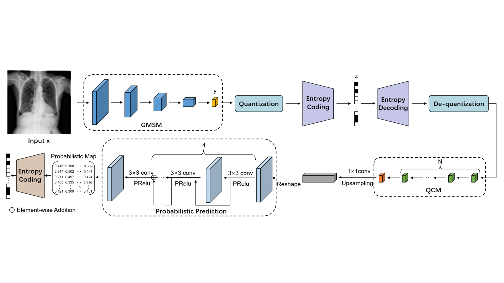
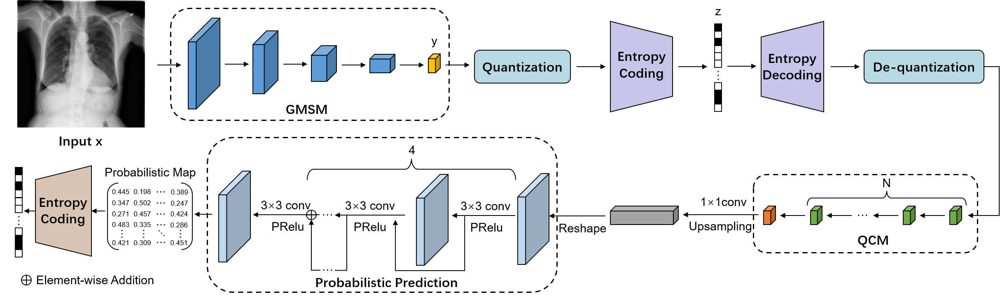
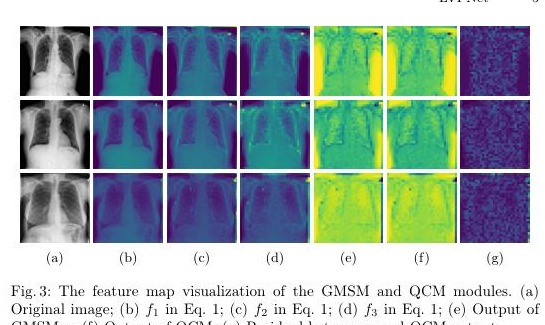
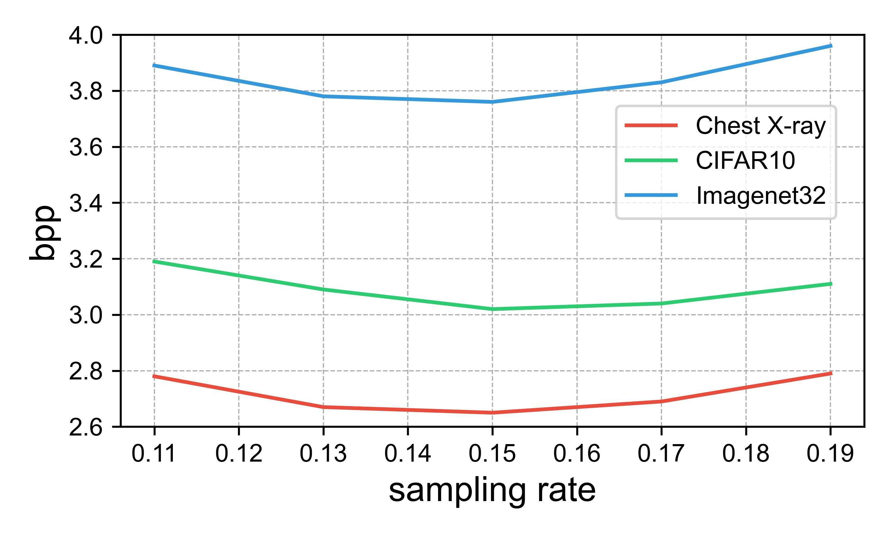

Abstract
Overview
Lossless medical image compression must preserve every diagnostic detail while reducing storage and transmission cost. LVPNet combines latent-variable coding with prediction-driven entropy modeling. Its global multi-scale sensing module extracts compact context, a quantization compensation module corrects information lost when the latent representation is discretized, and a probabilistic predictor models the residual image distribution. The unified framework improves compression efficiency across several medical-image datasets.
01 · Figure
LVPNet learns a compact global latent variable, predicts pixel distributions from multi-scale context, and compensates quantization loss for efficient end-to-end lossless medical image compression.

02 · Figure
End-to-End Compression Framework

03 · Figure
Multi-Scale Context and Compensation

04 · Figure
Sampling-Rate Analysis

Citation
BibTeX
@inproceedings{song2025lvpnet,
title={{LVPNet}: A Latent-variable-based Prediction-driven End-to-end Framework for Lossless Compression of Medical Images},
author={Song, Chenyue and Hui, Chen and Lin, Qing and Zhang, Wei and Li, Siqiao and Zhu, Haiqi and Zhang, Shengping and Li, Zhixuan and Liu, Shaohui and Jiang, Feng and Li, Xiang},
booktitle={Medical Image Computing and Computer Assisted Intervention},
year={2025}
}